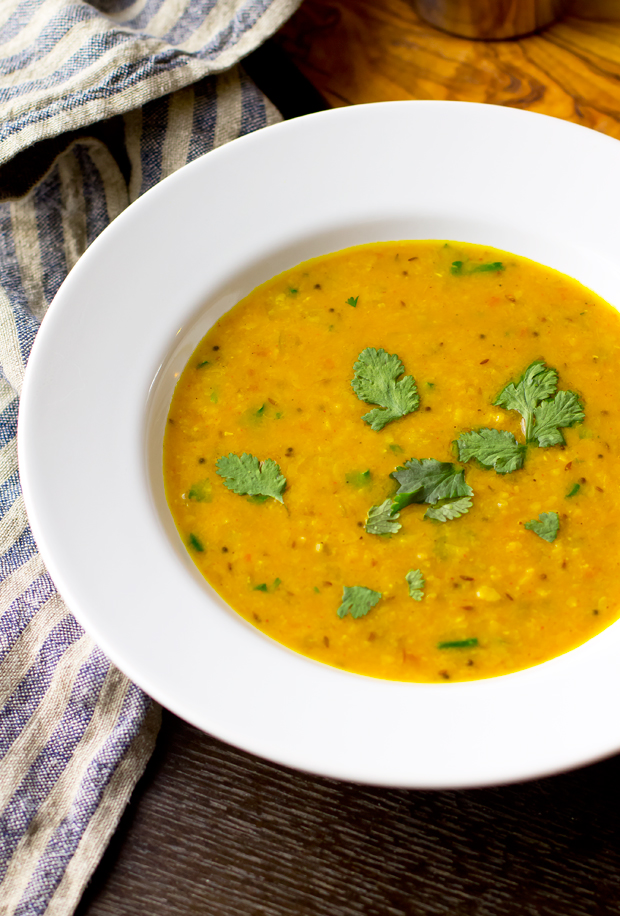

Dal

Warming punjabi dal
Delicous warming dal.
Ingredients
Yellow dal
Onions
Tomatoes
Garlic
Ginger
Oil
Dal spices
Directions
Heat oil over medium heat
Gently fry onions until golden
Add garlic and ginger and fry for a minute
Add spices